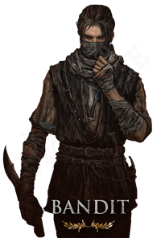
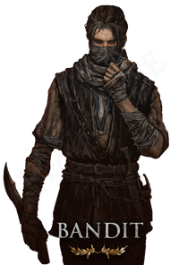
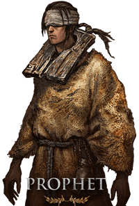
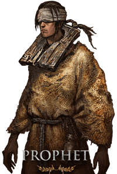

 


Az Elden Ringgel kezdő játékosoknak jól képzett osztályok ajánlottak. A kezdőknek el kell dönteniük, hogy milyen játékstílusuk van, hogyan akarják megközelíteni a játékot, majd később hogyan akarják felépíteni a karakterüket. Minden osztályhoz tartozik egy sor kezdő felszerelés is, amelyeket később a rendszeres játék során lehet megszerezni, így a legfontosabb, amit figyelembe kell venni, az egyes osztályok statisztikái és erősségei. Gondold át, hogy milyen fegyvereket vagy felszereléseket részesítesz előnyben, majd hozz létre egy olyan buildet, ami a legjobban megfelel annak, hogy mikor részesíted előnyben a közelharcot, a távolsági harcot vagy a mágikus harcot. A játékosok létrehozták a saját ajánlott Buildjeiket, amelyek alkalmasak kezdőknek vagy olyan játékosoknak, akiknek egy Attribútumot tartanak szem előtt. Próbáld ki a kezdőknek vagy azoknak a játékosoknak készített Buildeket, akik valami újat szeretnének kipróbálni, majd végezz módosításokat és cserélj ki különböző felszerelési darabokat, hogy jobban illeszkedjenek a stílusodhoz. A legjobb Buildeket itt találod.
Az ideális kezdő osztály a közelharcosok és kezdők számára, mivel jól felszerelt és a legmagasabb Vigorral rendelkezik, így az új játékosok a legmagasabb életerővel kezdhetik a játékot.
Ez az osztály a DEX-re és a hitre összpontosít, így hibrid varázslóvá válik. Jó a mágia kezdőknek.
A szamuráj sokak kedvenc kezdő osztálya, mivel nagyszerű kezdőfegyverrel rendelkezik, ami előnyt biztosít a játék elején, és nagy Endurance-vel indulsz.
Azoknak, akik a mágiára és a varázslásra akarnak koncentrálni.
A vérzésre összpontosító build olyan kezdők számára készült, akik agresszívan akarnak játszani. Az új játékosok ebben az osztályban kipróbálhatják és módosíthatják a meglévő Bloodblade Buildet.
| Vagabond | Confessor | Samurai | Astrologer | Warrior |
|---|---|---|---|---|
| Vigor 15 | Vigor 10 | Vigor 12 | Vigor 9 | Vigor 11 |
| Mind 10 | Mind 13 | Mind 11 | Mind 15 | Mind 12 |
| Endurance 11 | Endurance 10 | Endurance 13 | Endurance 9 | Endurance 11 |
| Strength 14 | Strength 12 | Strength 12 | Strength 8 | Strength 10 |
| Dexterity 13 | Dexterity 12 | Dexterity 15 | Dexterity 12 | Dexterity 16 |
| Intelligence 9 | Intelligence 9 | Intelligence 9 | Intelligence 16 | Intelligence 10 |
| Faith 9 | Faith 14 | Faith 8 | Faith 7 | Faith 8 |
| Arcane 7 | Arcane 9 | Arcane 8 | Arcane 9 | Arcane 9 |